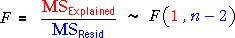
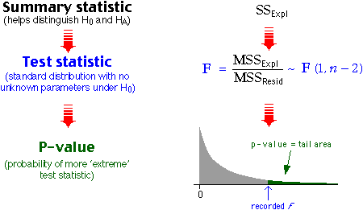

Is the model's slope zero?
We now use analysis of variance to test whether there is a relationship between the response, Y, and an explanatory variable, X. This is expressed in terms of the normal linear model parameters as:
H0 : β1 = 0
HA : β1 ≠ 0
Test statistic
The F ratio can be used as a test statistic since its distribution is known when the null hypothesis is true. High values of F suggest that β1 is not zero.
| When β1 is zero, |  |
| When β1 is non-zero, | The F ratio will tend to be higher |
P-value
The p-value for the test is therefore the upper tail area of the F distribution — the probability of getting such a high F ratio if the null hypothesis were true.

Illustration
The next diagram again allows samples to be selected from a normal linear model with σ = 10.
The grey distribution at the bottom is the theoretical F distribution for the F-ratio if the model's slope is really zero (H0). The tail-area above the F-ratio from the current sample is highlighted — it is the p-value for the test.
Click Another Data Set several times when the underlying slope is zero (i.e. H0 holds). Observe that the p-values are usually fairly large, though about 1 in 20 will be below 0.05 and about 1 in 100 will be below 0.01.
Increase the slope to 10.0 and take more samples. Observe that the F-ratio is often high with the p-value for the test close to zero, which we interpret as giving strong evidence that the underlying slope is non-zero (HA).
Increase the sample size and repeat. If the underlying slope is non-zero, increasing the sample size tends to result in a larger F-ratio and smaller p-value. In other words, if the slope really is non-zero, a larger sample size is more likely to detect it!
Note that about 10% of the area under the F distribution is higher than 5.0 when n = 5 (and about 4% when n = 50). It is a very skew distribution with an extremely long tail!!